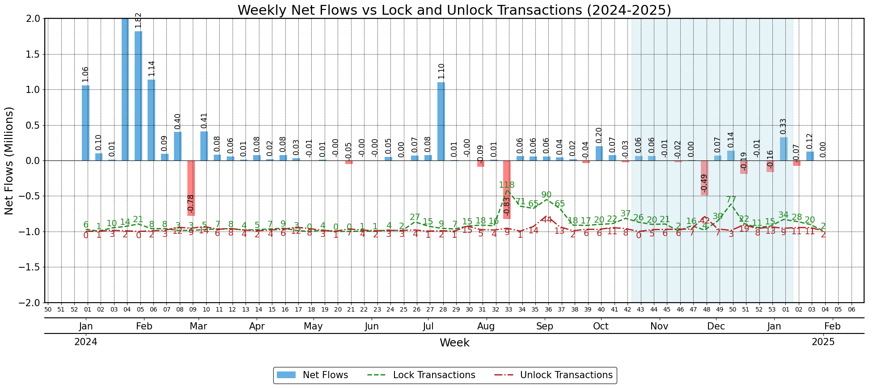
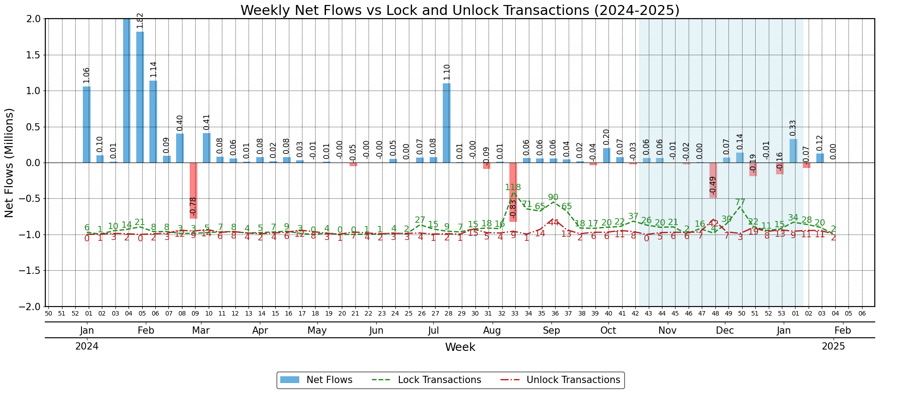

Last update: 2025-02-07 16:56:03
Epoch 7 Report
Comprehensive analysis of Epoch 7 performance metrics and user behavior
Locks and Unlocks
 

Octant Aggregates
Amounts (ETH)
| epoch | budget | budget_allocated | donations | leftover (%) | progress (%) | generosity (%) |
|---|---|---|---|---|---|---|
| 1 | 101.469 | 75.913 | 5.527 | 25.2 | 74.8 | 7.3 |
| 2 | 138.233 | 137.941 | 3.925 | 0.2 | 99.8 | 2.8 |
| 3 | 241.301 | 239.465 | 25.484 | 0.8 | 99.2 | 10.6 |
| 4 | 214.744 | 203.187 | 4.788 | 5.4 | 94.6 | 2.4 |
| 5 | 220.261 | 205.297 | 17.630 | 6.8 | 93.2 | 8.6 |
| 6 | 197.785 | 195.760 | 14.313 | 1.0 | 99.0 | 7.3 |
Users (addresses)
| epoch | potential_users | allocators | donors | ga_beneficiaries | turnout (%) |
|---|---|---|---|---|---|
| 1 | 515 | 362 | 347 | 15 | 70.3 |
| 2 | 586 | 366 | 332 | 14 | 62.5 |
| 3 | 603 | 320 | 285 | 15 | 53.1 |
| 4 | 593 | 303 | 279 | 16 | 51.1 |
| 5 | 898 | 439 | 422 | 232 | 48.9 |
| 6 | 982 | 479 | 455 | 193 | 48.8 |
Note: patron mode not included.
Users

The daily inflow of new users closely matched the Epoch 5 pattern. The relatively slow start occurred because the Allocation Window began on a Saturday. Throughout all epochs, we’ve observed significantly lower user activity on weekends.

Users who received GLM during Epoch 5 remained a significant portion of our active user base. This chart focuses only on the Epoch 5 campaign, as we are still need to check the giveaway data from Epoch 6 (some monitoring issues).

The turnout for this epoch matched Epoch 5’s level, with 48.7% of eligible addresses (those with a positive budget) making allocations. However, over 500 eligible addresses did not participate in the allocation process.

Users rarely return to the Octant app to modify their allocations, with the average number of allocation decisions remaining consistent since QF’s introduction. The vast majority make their allocation once and never adjust it.

Compared to Epoch 5, the only notable difference was a lower level of donations in the L user category, though Epoch 6’s overall aggregates remained similar.


The distribution of user types remains similar to Epoch 5. XL users continue to claim the majority of their rewards, while other categories maintain their predominantly full-regen status.

Octant users support an average of 4.5 projects, unchanged from Epoch 5. Most users supported just one project, consistent with Epoch 5 but different from earlier epochs like Epoch 4.
Funding Distribution

Protocol Guild placed second for the first time, despite ranking 7th in total donations. The distribution of donations was fairly even across projects, ranging from 38 to 90 donations each. While Protocol Guild received the most support with 90 donations, this represented only about 21% of the 419 active users who supported at least one project.

For the first time there is no clear correlation between the number of donors and total matching funding.

Similar to Epoch 5. Epoch 4 for reference (whales less relevant).

Similar to Epoch 5.
User Flows

If an Octant user doesn’t allocate during their first opportunity, they are unlikely to ever allocate. While there’s a small chance they’ll participate in the following epoch, after that we typically lose them permanently.

This chart shows the engagement of Octant users who made an allocation in a particular epoch. On average, after one epoch passes, 92% of users still have their GLM locked, but only 69.8% participate in the allocation window. After two epochs, 80.5% have their GLM locked and only 54% make an allocation. After 5 epochs, only 59.1% of allocators have any GLM still locked, and just 25.1% participate in the allocation window.
Note: This is based on averages calculated for every epoch (thin line charts). We have 5 observations for the first interval (i.e., 1 epoch passing) and only one observation for the 5th interval.